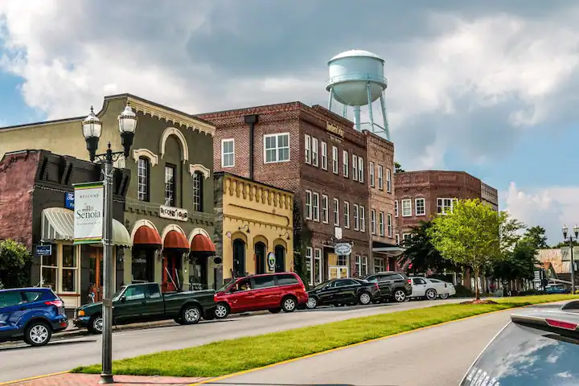
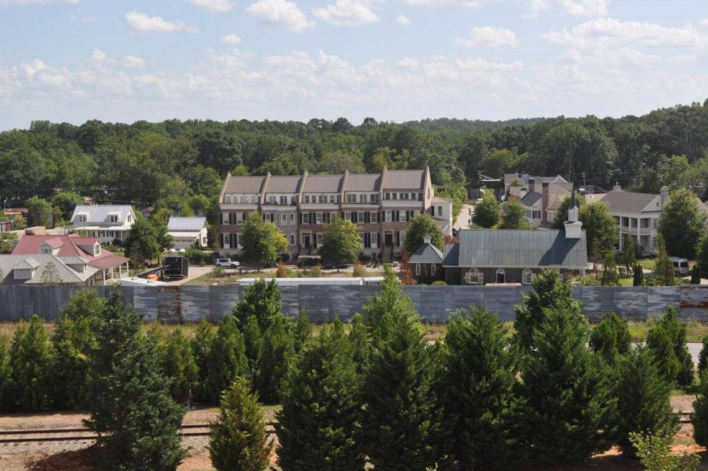
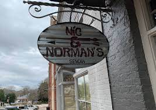
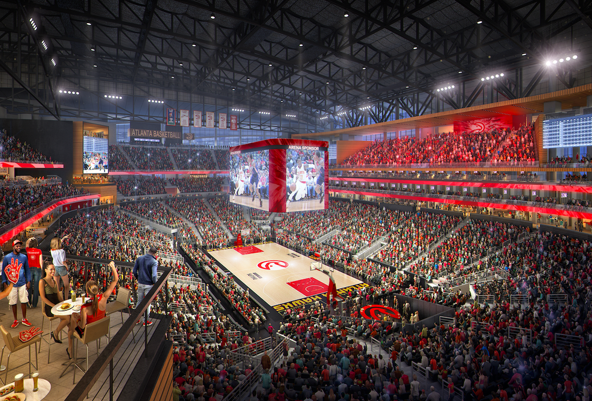
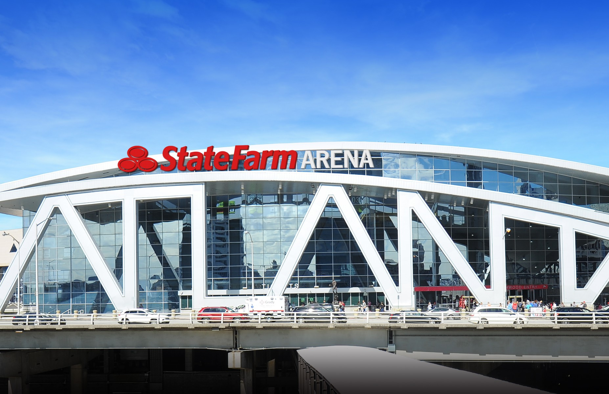
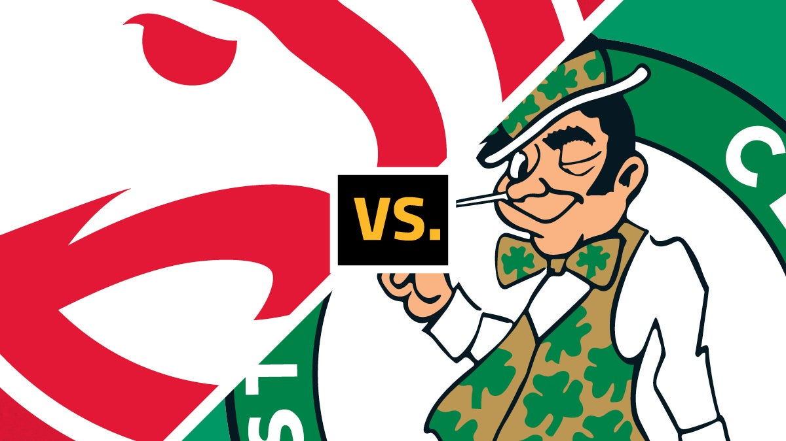

Elegistes Atalanta, muy bien uno de mis estados favoritos, en atlanta hay muchisimos lugares para visitar y hoy te contare todo en detalle de este gran viaje ademas voy a recomendarte lugares para visitar, para alojarte y para ir a comer algun lado.
ATLANTA
GEORGIA
VISITA A WORLD OF COCA-COLA


Cuando fui al museo de coca cola me encanto muchisimo, cuando llegas al museo te regalan una coca cola de bienvenida, depues tendra varias actividades para hacer dentro del museo, ademas se encuentra en una bobeda la formula secreta. tambien en el tercer piso te encontraras un espacio gigantesco de todas las bebidas del mundo de la linea coca-cola, estan divididas por continentes algunas son dulces y otras son muy amargas. a la hora de irte pasaras por la tienda de regalos que podras comprar remeras, llaveros, ositos de peluche y etc.
Precios:
Personas de 13 a 64 años pagan: $21 dolares
Personas mayores de 65 años pagan: $19 dolares
VISITA A LOS ESTUIDOS DE TWD



Fuimos a visitar los estudios de The Walking dead una de mis series favoritas, gran parte de la serie se graba en atlanta en un pueblo llamado Senoia donde se puede ir y recorrer el pueblo, tienen una tienda donde podes comprar vestimentas, comics, camisetas, muñecos y etc. Y fuimos a comer a NIC & NORMAN´S, una restaurante de las mejores hamburguesas y papas de Atalanta, los dueños son Norman Reddus actor principal de la serie que encarna a Darly Dixon y Greg Nicotero uno de los grandes maquilladores de Zombies, que tambien esta trabando con la serie. El precio de la hamburguesa con papas y refresco cuesta aproximadamente: $25 dolares A 50 metros aproximado se encuentra la comunidad de Alexsandria donde graban gran parte de la serie, pero no solo se graba en senoia sino que por muchos lados se graban. les dejare un boton para darles toda la informacion del tour que hicimos solo de Twd, todas las localidad.
EXPERIENCIA EN LA NBA



Fuimos a ver nuestor primer partido de la NBA en el: State Farm Arena la cancha de basquetbol del equipo de los Atlanta Hawks. En ese partido jugaba Atlanta Hawks Vs Boston Celtics el partido habia quedado, Celtics 123 vs Hawks 115. Fue una gran experiencia, estaban los tipicos Kiss Cam y obsequios que caian desde el techo.
COMER Y HOSPEDAJE
Aqui les contare a detalle en donde quedarse a dormir y donde comer en lugares buenos cerca de las actividades que les mencione anteriormente